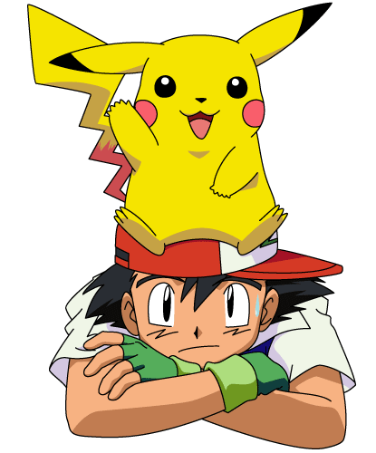
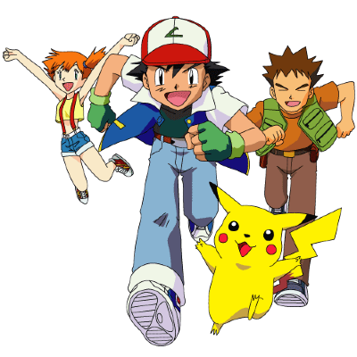

Konu
Ash Ketchum, geleceğin büyük pokemon eğitmeni olmaya kararlıdır. 10 yaşına bastığı gün, Pokemon macerasına başlamak için sabırsızlanmaktadır. Ancak o sabah geç kaldığı için telaş içinde Profesör Oak'ın laboratuvarına koşar. Profesör Oak, Pokemonlar hakkında derin bir bilgiye sahip bir akademisyen olarak tanınır. Fakat Ash laboratuvara ulaştığında tüm Pokemonların alındığını ve sadece asi Pikachu'nun kaldığını öğrenir. Pikachu, hiçbir kurala uymayan ve Poketopu'na bile girmeyen bir Pokémon'dur. Ash, başka seçeneği olmadığı için Pikachu'yu kabul eder.
Dışarı çıktığında, rakibi Gary, Pokemonunu almış ve kendini övüyordur. Gary'nin yola çıkmasının ardından, Ash kararlılıkla dünyanın en büyük Pokemon eğitmeni olma hedefini koyar. Ancak, Profesör Oak, ondan bir ricada bulunur ve ona Pokedex'i verir. Ash, Pokedex'i tamamlaması için yeni bir görevle karşı karşıyadır ve bu görevi kabul eder.
Bu noktada, Gary, Ash'in en büyük rakibi haline gelirken, Ash Pokemon dünyasında bir kahraman olma yolunda ilerlemeye başlamıştır.
 